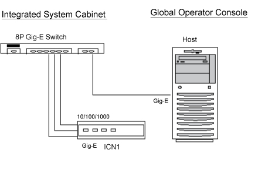
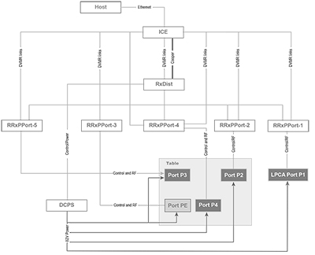

diagnostics_collect_file
1 Components tested
Click Calculate Time for an estimate of the time it will take to run the selected diagnostics.
2 Block diagram


3 Test sequence
Error messages for a RRxPPort may say (for example) RRxPPort-1, RRx-1; RRx-9; RRx-1 J6 for the lower half of RRx-1; and RRx-1 J9 for the upper side of RRx-1. If an error message refers to RRx-10; it is talking about the second set of 16 channels in RRxPPort-2, J2.
Error messages for the RxDistribution module may say RxDistribution, RxDist, or RRx-6.
Diagnostic results display a status of Pass or Fail. If you receive a Fail status, click GE System Log to view the error message. The system log records errors with the date, time, the process tested, and a detailed error message.
Diagnostic results display a status of Pass, Fail, or No ICNs Defined. If you receive a Fail status, click GE System Log to view the error message. The system log records errors with the date, time, the process tested, and a detailed error message.
Diagnostic results display the test name with a status of Pass or Fail. If you receive a Fail status, click the error number in the 1st Error column to view error message details.
Diagnostic results display the test name with a status of Pass or Fail. If you receive a Fail status, click the error number in the 1st Error column to view error message details. A full list of errors is available in the GE System Logs.
If this test fails, it is possible that the SCP function on ICE motherboard is defective.
 |
|
6 Test status
This window informs you of the progress of the test from the initial scan to the completed diagnostic.
7 Finalization
Before scanning, perform a TPS Reset or an End Diagnostics.
Before scanning, perform a TPS Reset.
8 Content shared between "Doing ICN hardware intensive diagnostics" & "Doing ICN hardware health diagnostics"
Additional responses to the diagnostic's results are outlined below.
9 Returned material
Per GE Healthcare Policy 3.9, all requested material is to be promptly returned as directed, intact to either GoldSeal or Approved GE Recycling Center. Do not remove or swap any parts from the material to be returned.
10 Disposed material
Regulations governing the disposal of this equipment or material vary from location to location and from country to country. In order to insure compliance with all local, state, or national environment, health, and safety regulations, dispose of all items in the per local GEHC policy and procedures and other applicable published guidance. Contact GEHC Recycling Center for assistance.
11 Harvest testing
|
|
Before going on site:
- Harvest testing must be completed before removal to make sure Harvest will accept the returned equipment.
-
Print the proper regional address labeling from DOC2100599 Harvest Return Addresses.
-
Verify that you can download the Harvest test procedure from MyWorkshop using DOC1899393.
-
If you have not been contacted to test the system or cannot download the document, reach out to the local Harvest team. For all other requests contact:
@HEALTH Global Harvest Team GlobalHarvestTeam@ge.com
Once testing is completed, submit the test record for review. Once these test records are reviewed, they will be processed for electronic signatures.
Package the equipment and follow your regions method of returning harvest equipment.